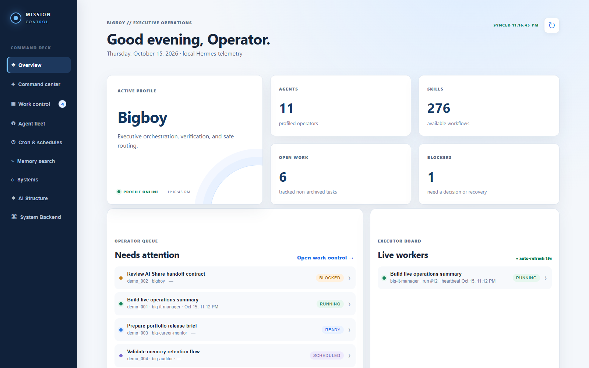
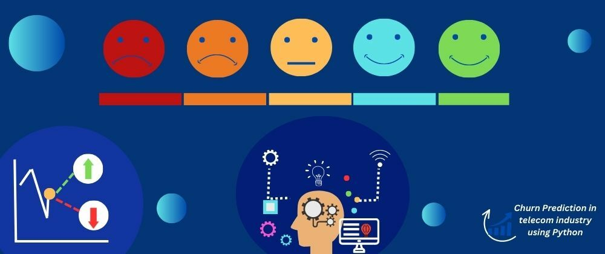
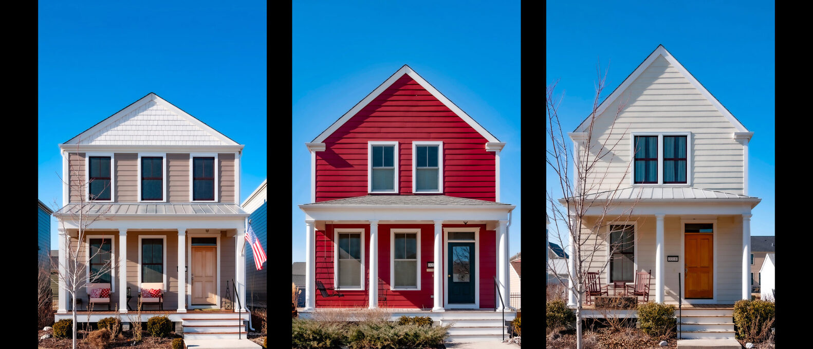
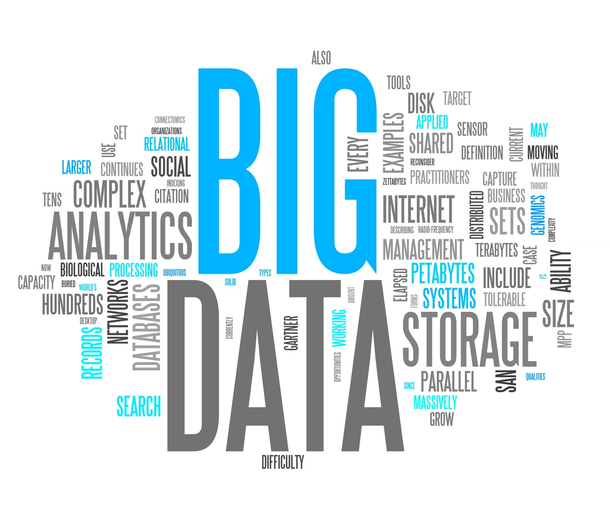

Featured system / 01
AI Agent System
A portfolio-safe mission control surface for a multi-agent operating model. It makes ownership, task state, memory boundaries, and system relationships understandable at a glance.
Analytics engineering · automation · AI systems
I’m Dat Dao, a senior analyst and consultant building decision tools, reliable workflows, and multi-agent systems across SQL, Power BI, Python, R, and cloud platforms.
Make the signal usable.
From messy inputs to an operating system people can trust.
Selected work
Each project connects a technical method to a practical outcome: better decisions, clearer operations, or a more dependable workflow. See the visual evidence ↗

Featured system / 01
A portfolio-safe mission control surface for a multi-agent operating model. It makes ownership, task state, memory boundaries, and system relationships understandable at a glance.
Machine learning / 02
Classification research for identifying suspicious transactions and balancing model performance with operational usefulness.
Open visual project
Predictive analytics / 03
Translating subscription, service, and account behavior into retention-focused insight.
Open visual project
Statistical modeling / 04
A transparent modeling workflow for understanding which property attributes influence sale price.
Open visual projectTime series / 05
Comparing statistical and recurrent approaches while keeping the limits of forecasting visible.
Open visual projectApplied ML / 06
Property-level modeling designed to support clearer decisions in a high-variance market.
Open visual project
Exploratory analysis / 07
Exploring how quality, size, age, and location shape residential property outcomes.
Open visual projectNLP / 08
Using text signals to improve matching precision and surface useful labor-market patterns.
Open visual project
Data engineering / 09
Demonstrating ingestion, streaming, and scalable storage with NiFi, Kafka, and HDFS.
Open visual projectHow I work
The strongest systems are understandable enough to operate, inspect, and improve after the demo is over.
Start with the business question, the person who needs the answer, and the action that follows.
Make data lineage, assumptions, limitations, and validation visible instead of hiding them behind a score.
Document the workflow so another person can run it, trust it, and extend it without guessing.
Let’s build something useful
I’m open to analytics engineering, automation, and AI systems conversations.